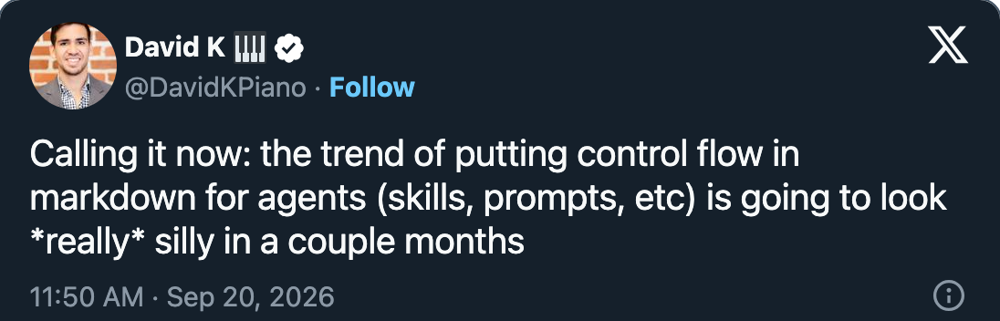

Rich Snapp
richsnapp.com — Automating agents with the next iteration of Ralph
flowchart TD
A[Tasks done] --> B[Architect]
B -->|issues| C[Rework]
C --> A
B -->|approved| D[Human]
D -->|approved| E[Closed]
D -->|changes| C
a deterministic loop on purpose; it worked, but it lived as many lines of bash and was hard to visualize and change

## Workflow
1. Run the tests. If they fail, go to step 4.
2. IMPORTANT: ask the reviewer for a review.
3. If it asks for changes, go back to step 1.
You MUST loop until it approves.
4. Fix the failures, then return to step 1.
NEVER commit before the review passes.
ALWAYS follow these steps in order.claim A: no one prompt covers them all
claim A: Claude wrote every Machine in this repo; review the graph, not the transcript
claim B: leaked resources, locking on a shared host, harness and user share credentials
claim B: more than one machine, headless, reachable from other systems
bridge into the demo
[screenshot: @mitchellh — "the whiteboard defense"]
talk is cheap: a live run, and every part explained as it moves
jr2.config.ts — what this deployment can reachworkflows/ — ping, triage, taskimages/default/ — what a Sandbox is made ofADR-0009 · ADR-0019 · ADR-0050
Idempotent. Every image reports what it did not have to do.
ADR-0019 · ADR-0038 · ADR-0041
the Orchestrator, the operator, the Instance Harness; no Sandbox
No Agent. No Sandbox. No model. The run is the machine moving.
ADR-0011 · ADR-0022
A Menu-only Agent. Its Menu is accept, needs_info, reject — and a
pick outside them moves nothing.
ADR-0015 · ADR-0029 · ADR-0031
answer is the Gate's alone — no Agent state can offer it
ADR-0011 · ADR-0015
the summary is the next workflow's prompt
isolation is spent only where code runs
Detached on purpose — it will park at a Gate and wait for me.
ADR-0012 · ADR-0018 · ADR-0028
Harness, Adapter, User Container
ADR-0005
talk while the run works toward its Gate
ADR-0024 · ADR-0057
The Gate names the decision and exactly the events it will accept.
ADR-0011 · ADR-0026 · ADR-0029
A workflow-defined event. Another Turn, same Workspace.
ADR-0011 · ADR-0021
The Workspace goes. The Machine never pushes.
ADR-0021 · ADR-0028
the Workspace ended with the run
the model never picks the control flow · the Machine never pushes · the Agent never holds the Orchestrator credential
model agnostic · typed Instances · composable Machines
today Claude writes them at design time
tools that reach outside (Slack, SMS), with credentials the Agent never holds — ADR-0058
npm i -g @jr2/cli
jr2 init my-agents
jr2 upgithub.com/<org>/jr2 · CONTEXT.md for the words · docs/adr for the whys